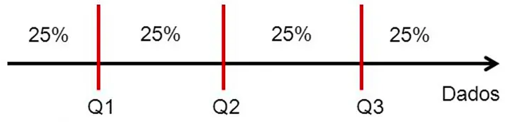
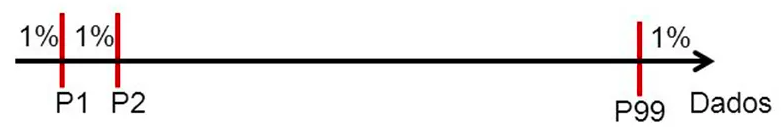

Medidas de Posição
ESTAT0011 – Estatística Aplicada
Prof. Dr. Sadraque E. F. Lucena
sadraquelucena@academico.ufs.br
http://sadraquelucena.github.io/estat-aplicada
Introdução
- Na Engenharia de Materiais, é comum realizar experimentos repetidas vezes para caracterizar as propriedades de um material.
- Isso ocorre porque os dados possuem variabilidade natural, erros de medição, impurezas nas amostras e comportamentos inesperados.
- Por isso, faz mais sentido analisar o comportamento de um conjunto de corpos de prova do que para um único teste.
- No entanto, para compreendermos melhor, precisamos resumir as informações coletadas.
Introdução
Como podemos resumir milhares de medições de laboratório em indicadores que permitam uma tomada de decisão técnica segura e econômica?
As Medidas de Posição (ou de Tendência Central) são os nossos primeiros instrumentos de navegação para identificar onde a maioria dos dados “se localiza”.
Tipos de informações essenciais que podemos extrair:
- O Equilíbrio: Onde está o centro de massa? (Média)
- A Ordem: Qual valor divide o lote ao meio? (Mediana)
- O Padrão: O que mais se repete no processo? (Moda)
- As Fronteiras: Onde estão os 25% melhores ou piores? (Separatrizes)
Introdução
Exemplo
- Imagine que você precisa decidir se um lote de polímero para próteses médicas deve ser aprovado ou descartado. Diante de muitos valores obtidos nas medições, é necessário resumir essas informações em números representativos para facilitar a análise. A média cumpre esse papel ao indicar um valor geral do conjunto, mas existem também outras medidas, como a mediana e a moda, que oferecem diferentes perspectivas sobre a distribuição e tornam a decisão mais confiável.
Atenção!
- Não foquem no cálculo (a calculadora faz isso).
- Foquem no sentido: por que uma medida é melhor que outra para cada tipo de problema?
Média Aritmética
(Um resumo do comportamento do material)
Por que calcular a média?
Suponha que em um laboratório, uma engenheira está avaliando a resistência à tração (tensão máxima que o material suporta antes de romper) de um polímero usado em engrenagens. Cada peça testada pode apresentar valores ligeiramente diferentes devido a:
- pequenas impurezas no material
- defeitos microscópicos
- pequenas variações no processo de fabricação
Pergunta
Se medirmos várias peças de um mesmo lote e obtivermos valores diferentes, como resumir todo esse comportamento em um único número representativo?
Média Aritmética
A média aritmética é a soma de todos os valores observados dividida pelo número total de observações.
Se observarmos \(n\) valores de uma variável \(X\), isto é, \(X_1, X_2, \ldots, X_n\), a média amostral (denotada por \(\overline{X}\)) é dada por \[ \overline{X}=\frac{\sum_{i=1}^{n}X_i}{n} \]
A média amostral é uma estimativa da média real da população.
A média populacional é representada por \(\mu\).
Interpretação Física da Média
- Uma forma intuitiva de entender a média é imaginar um centro de massa.
- Se colocarmos todos os valores sobre uma régua, a média seria o ponto onde a régua se equilibraria.
- Essa interpretação é útil porque mostra que:
- valores maiores puxam a média para cima
- valores menores puxam a média para baixo
Exemplo 2.1
Um laboratório está avaliando a resistência à tração de um polímero usado em peças estruturais. A propriedade é medida em MPa (megapascal, unidade de tensão mecânica). Cinco amostras foram testadas (MPa): 200, 205, 198, 202, 195. Calcule a média e responda se ela descreve bem o comportamento dessas 5 peças.
Exemplo 2.2
Considere agora um novo lote com falha de processamento. As medidas obtidas foram: 200, 205, 198, 202, 10 (a última peça quebrou por um defeito de fabricação). Calcule a média. O que aconteceu com ela?
Reflexão
- A média caiu de 200 MPa para 163 MPa por causa de uma única peça defeituosa.
- Isso levanta uma questão importante:
- A média ainda representa bem o comportamento do material?
- Informar 163 MPa seria injusto com a qualidade das outras peças, mas ignorar o 10 seria perigoso.
- Essa limitação da média motiva o estudo de outras medidas de posição, como a mediana.
Vantagens e Desvantagens da Média
Vantagens
- Utiliza todas as observações do conjunto de dados
- Fácil de calcular
- Amplamente utilizada em engenharia e ciência
Desvantagem
- A média é muito sensível a valores extremos (outliers).
O que fazer na prática?
- Ignorar valores extremos pode esconder defeitos de fabricação
- Considerá-los pode distorcer a caracterização do material
- Por isso, outras medidas como mediana e moda também são importantes.
Mediana
(Uma medida robusta de posição)
Quando a Média Falha
No exemplo anterior, analisamos um lote de polímero com os valores: \[200, ~205, ~198, ~202, ~10 ~\text{MPa}\]
- A média foi: 163 MPa.
Mas esse valor não representa bem o material, pois quatro amostras estão próximas de 200 MPa e apenas uma possui defeito.
Pergunta
Existe uma medida que represente o centro do conjunto de dados, mas que não seja fortemente afetada por valores extremos?
Mediana
- A mediana é o valor central de um conjunto de dados após ordenar os valores.
- Esse conjunto ordenado é chamado de Rol.
Rol = lista de dados organizada do menor para o maior valor.
- Para determinar a mediana:
- Ordenamos os dados.
- Identificamos a posição central.
Encontrando a Mediana
Caso 1 – número ímpar de dados
Se \(n\) é ímpar, a mediana é o valor na posição \(\frac{n+1}{2}\), ou seja, \[ Md = X_{\frac{n+1}{2}} \]
Caso 2 – número par de dados
Se \(n\) é par, a mediana é a média dos dois valores centrais \[ Md = \frac{X_{\frac{n}{2}}+X_{\frac{n}{2}+1}}{2} \]
- Erro Comum: Tentar encontrar a mediana sem ordenar os dados antes.
Exemplo 2.3
(Mesmos dados do Exemplo 2.2) Considere o lote com falha de processamento. As medidas obtidas foram: 200, 205, 198, 202, 10 MPa. Calcule a mediana e compare com a média. Qual descreve melhor a resistência do polímero “bom”?
Vantagens e Desvantagens da Mediana
Vantagens
- Não é influenciada por valores extremos (outliers).
- Muito útil quando existem defeitos ou medições anormais.
- Funciona bem em distribuições assimétricas.
distribuição assimétrica = quando os dados não estão igualmente distribuídos em torno do centro
Desvantagens
- Não utiliza toda a informação do conjunto de dados.
- Pode esconder problemas sistemáticos no processo de fabricação.
Observações Importantes
- Use a mediana para caracterizar materiais onde falhas isoladas de ensaio são comuns.
- Quando os dados são simétricos, a média e a mediana costumam ter valores semelhantes.
Moda
(O padrão mais frequente do processo)
Identificando repetição nos dados
Em uma linha de produção de peças poliméricas, várias amostras são testadas quanto à resistência à tração. Ao observar os resultados, o engenheiro percebe que alguns valores aparecem várias vezes.
Pergunta
Se retirarmos uma nova peça aleatória da linha de produção, qual valor de resistência é mais provável de aparecer novamente?
Moda
A moda (\(Mo\)) é o valor que possui a maior frequência no conjunto de dados.
- É a única medida de posição que pode ser usada para variáveis qualitativas (ex: tipo de defeito mais comum).
- Definição formal: \[Mo = \text{valor com maior frequência}.\]
Observações importantes
- A moda pode não existir (quando nenhum valor se repete).
- Pode haver mais de uma moda.
Casos possíveis
- Conjunto unimodal (uma moda): 1, 2, 3, 3, 4, 4, 4, 5
- Moda = 4
- Conjunto amodal (sem moda): 1, 2, 3, 4, 5
- Nenhum valor se repete.
- Conjunto multimodal: 2, 2, 3, 3, 4, 5, 5
- Modas = 2, 3 e 5
Exemplo 2.4
Considere uma linha de produção de peças poliméricas, onde várias amostras são testadas quanto à resistência à tração (tensão máxima que o material suporta antes de romper), medida em MPa (megapascal, unidade de tensão mecânica). Os resultados obtidos para um lote maior de peças foram:
\[10, ~198, ~200, ~200, ~200, ~202, ~205, ~205, ~210, ~212\] Qual a moda desses dados?
Vantagens e Desvantagens da Moda
Vantagens
- Não é afetada por valores extremos (outliers).
- Pode ser usada com dados qualitativos (ex.: tipo de defeito mais comum – trinca, bolha, porosidade).
Desvantagens
- Pode não existir.
- Pode não representar bem o conjunto de dados se houver poucas observações.
Observações Importantes
Em controle de qualidade, a moda pode indicar:
- o valor mais comum produzido pela máquina
- o tipo de defeito mais frequente
Essas informações ajudam a identificar problemas recorrentes no processo de fabricação.
Separatrizes
(Quartis e Percentis)
Além do Centro
Até agora usamos três medidas para resumir os dados:
- Média → centro de massa dos dados
- Mediana → valor que separa os dados em 50% abaixo e 50% acima
- Moda → valor mais frequente
Mas um engenheiro frequentemente precisa responder perguntas como:
- Qual é o limite inferior de desempenho do material?
- Quais são os 25% piores resultados?
- Qual valor 75% das peças conseguem atingir?
Além do Centro
Pergunta
- Como podemos dividir os dados em partes iguais para analisar diferentes regiões do desempenho do material?
Resposta
- Usamos separatrizes, que dividem os dados ordenados em partes iguais.
Separatrizes
- As separatrizes são valores que ocupam posições específicas em um conjunto de dados ordenado.
- Elas dividem os dados em partes iguais.
- Principais tipos:
- Mediana → divide os dados em 2 partes
- Quartis → dividem em 4 partes
- Decis → dividem em 10 partes
- Percentis → dividem em 100 partes
Interpretação
- As separatrizes ajudam a entender como os dados estão distribuídos.
- Elas permitem identificar:
- regiões com melhor desempenho
- regiões com pior desempenho
- possíveis valores extremos
Quartis
- Os quartis dividem os dados em quatro partes iguais.
- Depois de ordenar os dados, temos:
- Primeiro quartil (\(Q_1\)): 25% dos dados estão abaixo desse valor.
- Segundo quartil (\(Q_2\)): 50% dos dados estão abaixo desse valor (é exatamente a mediana).
- Terceiro quartil (\(Q_3\)): 75% dos dados estão abaixo desse valor.

Como calcular a posição dos Quartis
Se tivermos \(n\) dados ordenados, a posição do quartil \(k\) pode ser calculada por \[ Q_k = \frac{k(n+1)}{4} \] onde
\(k=1\) → primeiro quartil (\(Q_1\))
\(k=2\) → segundo quartil (\(Q_2\))
\(k=3\) → terceiro quartil (\(Q_3\))
Interpretação
Os quartis ajudam a identificar:
a região dos dados mais baixos
a região central
a região dos valores mais altos
Isso é muito útil para analisar variabilidade de propriedades de materiais.
Uso prático
- Em controle de qualidade, quartis podem indicar:
- o desempenho mínimo aceitável do material
- a faixa típica de propriedades
- possíveis valores anormais ou defeituosos
Percentis
- Os percentis dividem um conjunto de dados ordenados em 100 partes iguais.
- O percentil \(P_k\) indica o valor abaixo do qual estão \(k\)% dos dados.
- Exemplos:
- \(P_{25}\) → 25% dos valores estão abaixo dele
- \(P_{50}\) → 50% dos valores estão abaixo (é a mediana)
- \(P_{90}\) → 90% dos valores estão abaixo

Como calcular a posição de um Percentil
Se o conjunto possui \(n\) observações, a posição do percentil \(k\) é dada por \[ P_k = \frac{k(n+1)}{100} \]
Se a posição não for inteira, faz-se interpolação entre os valores vizinhos.
Interpretação
- O percentil indica a posição relativa de um valor dentro da distribuição.
- Exemplo:
- Se a resistência de uma peça está no percentil 90, significa que:
- 90% das peças possuem resistência menor ou igual
- apenas 10% possuem resistência maior
- Se a resistência de uma peça está no percentil 90, significa que:
Uso prático
- Percentis são usados para avaliar desempenho e confiabilidade de materiais.
- Exemplos:
- \(P_5\) → resistência mínima garantida para projeto estrutural
- \(P_{50}\) → desempenho típico do material
- \(P_{95}\) → desempenho de alto nível do processo produtivo
- Assim, os percentis ajudam a definir limites de segurança, qualidade e variabilidade do material.
Exemplo 2.5
Um laboratório mediu a resistência à tração (tensão máxima que o material suporta antes de romper) de 10 amostras de um polímero, em MPa. Os valores já estão ordenados: \[ 180, ~190, ~195, ~198, ~200, ~202, ~205, ~210, ~212, ~220 \]
Determine os quartis e o percentil 90.
Comparando as Medidas de Posição
Média (valor médio)
- Pergunta que responde: Qual é o valor médio do conjunto de medições?
- Características:
- Usa todos os dados
- Sensível a valores extremos (outliers)
- Uso típico: estimar a propriedade média de um material
Mediana (valor central)
- Pergunta que responde: Qual é o valor que divide os dados ao meio?
- Características:
- 50% dos dados estão abaixo
- 50% estão acima
- Robusta a valores extremos
- Uso típico: representar o comportamento típico quando há defeitos ou outliers
Moda (valor mais frequente)
- Pergunta que responde: Qual valor aparece mais vezes?
- Características:
- indica o resultado mais comum
- pode não existir ou haver várias modas
- Uso típico: identificar o valor típico produzido pelo processo
Quartis (divisão em 4 partes)
- Pergunta que responde: Como os dados se distribuem entre regiões inferiores e superiores?
- \(Q_1\) → 25% dos dados abaixo
- \(Q_2\) → mediana (50%)
- \(Q_3\) → 75% dos dados abaixo
- Uso típico: avaliar dispersão e variabilidade do material
Percentis (posição relativa)
- Pergunta que responde: Qual é a posição de um valor dentro da distribuição?
- Exemplo:
- \(P_{90}\)→ 90% dos valores estão abaixo
- Uso típico: definir limites de segurança e confiabilidade
- Exemplo em engenharia: resistência mínima usada em projeto pode ser o percentil 5.
Fim